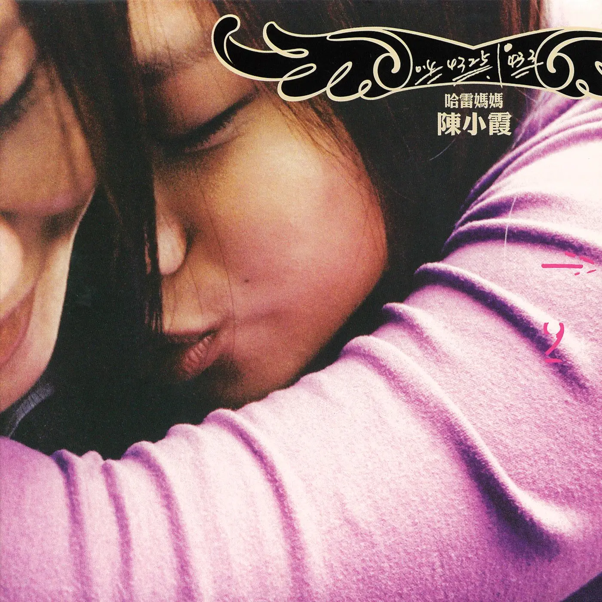
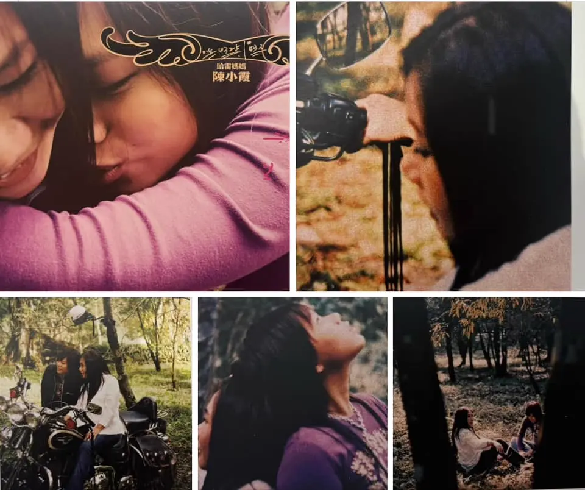

Album#17
哈雷妈妈
{kind=link}

黑暗有一种疗伤的温度
会让灵魂蒸发掉痛楚
回到羽毛的重量开始
旋转着自由轻轻飘浮
一个人跳舞 解脱束缚
让小小舞台也能够容纳幸福
征服着午夜就像征服了自己
明亮的自我原来藏在暗处
黑暗中跳舞 品尝孤独
让依赖奢侈的情感回归纯朴
白天的脆弱 在夜里发现勇气
像一颗珍珠 最明亮的孤独
暗舞
专辑信息
- 专辑名称：哈雷妈妈 (Harley Mama)
- 歌手：陈小霞
- 年份：2005-12-30
- 风格：流行
- 时长：约 48 分钟
无意中听到了陈小霞的歌，被她的嗓音、歌词吸引了，找到了这张专辑。
专辑的封面是陈小霞的女儿抱着她，拥抱里有着依恋，还有没说出来的「我爱你」。这张专辑前前后后做了有六年之久，女儿也伴着这张《哈雷妈妈》的制作长大到了 18 岁，母女两人像是一对好姐妹一般。
《十年》、《好久不见》、《约定》、《魔鬼中的天使》、《他不爱我》这些耳熟能详的歌曲，都是陈小霞作曲的。
关于专辑的名字：
「哈雷」代表着某种自我坚持与勇于尝试，「妈妈」代表着温柔的关怀与对生命的热爱。合之「哈雷妈妈」便是在回忆之中获得抚慰，学习勇敢，懂得感激、继续热爱。这也是陈小霞此次专辑取名「哈雷妈妈」的重要意念。

{kind=link}
陈小霞的声音是低沉沙哑的，听她唱歌，就像在听她喃喃倾诉着一段段往事，平静温和。在她那缓缓的叙述里包含着力量，给人回头看和向前走的勇气。
这些歌就好像一个一个的抽屉，
藏着一个一个不同的人生秘密，
在一个有点忧伤的柜子里。
只是关于「爱情」那个抽屉，我是永远锁起来了。
这些歌不单单属于「回忆」，也属于「勇气」。
我们都走过许多的路，往前走下去，还需要很多勇气。
回头看，或许需要更多勇气。
我用了很多勇气，唱出这一篇篇的生命之歌。
是因为希望你听了，能够和我一样，继续勇敢地生活下去。
我们倒退着，向前走。
看着过往，走向未知的明天。
专辑里，我最喜欢的是《暗舞》、《陌生小镇》。
《查无此人》、《天使的侧脸》、《心疼》、《十三岁半》、《猫》 也比较喜欢。
《苦果》作词姚若龙，作曲陈小霞。
你种的爱 长成遗憾
果实像泪光闪闪
想用微笑
酿回忆的酒 纪念短暂
只可惜 这微笑太苦也太酸
爱不能只为太期盼
有人实现你制定的美满
平凡人 谁喜欢
爱变成负担
爱不能只为怕孤单
心的寂寞不是谁来陪伴
都可以 烟消云散
爱很简单 幸福很难
满身伤痕的辗转
对自己说 走向孤单也许最平安
心一起风 又蹒蹒跚跚
泪浇的爱容易结苦果
但人总盼着有甜蜜 藏在苦中
爱不能只为太期盼
有人实现你指定的美满
平凡人 谁喜欢
爱变成负担
爱不能只为怕孤单
心的寂寞不是谁来作伴
都可以 烟消云散
爱很简单 幸福很难
满身伤痕的辗转
对自己说 走向孤单也许最平安
心一起风 又跚跚
小霞的声音娓娓道来，「泪浇的爱容易结苦果」，大概是在爱中受了伤，满身伤痕的她，「对自己说 走向孤单也许最平安」。
《暗舞》作词李子恒，作曲陈小霞。
结束了扮演白天的俘虏
拥抱黑夜跳起了独舞
舞动没人偷窥的的影子
自由在黑暗中多么清楚
黑暗有一种疗伤的温度
会让灵魂蒸发掉痛楚
回到羽毛的重量开始
旋转着自由轻轻飘浮
一个人跳舞 解脱束缚
让小小舞台也能够容纳幸福
征服着午夜就像征服了自己
明亮的自我原来藏在暗处
黑暗中跳舞 品尝孤独
让依赖奢侈的情感回归纯朴
白天的脆弱 在夜里发现勇气
像一颗珍珠 最明亮的孤独
黑暗有一种疗伤的温度
会让灵魂蒸发掉痛楚
回到羽毛的重量开始
旋转着自由轻轻飘浮
一个人跳舞 解脱束缚
让小小舞台也能够容纳幸福
征服着午夜就像征服了自己
明亮的自我原来藏在暗处
黑暗中跳舞 品尝孤独
让依赖奢侈的情感回归纯朴
白天的脆弱 在夜里发现勇气
像一颗珍珠 最明亮的孤独
一个人跳舞 解脱束缚
让小小舞台也能够容纳幸福
征服着午夜就像征服了自己
明亮的自我原来藏在暗处
黑暗中跳舞 品尝孤独
让依赖奢侈的情感回归纯朴
白天的脆弱 在夜里发现勇气
像一颗珍珠 最明亮的孤独
很喜欢的一首，喜欢歌词、小霞的声音、悠扬的弦乐，就像是一段黑暗中的独舞，没有束缚。
《查无此人》作词姚若龙，作曲陈小霞，编曲洪晟文。
寄一份问候给远方的童年
想念那张满是纯真的脸
可以哭过就笑从不曾算计
幸福离的多遥远
寄一份心情给久违的青春
想念那个敢爱敢恨的人
相信忠于感觉会快乐一些
宁可受伤不肯说谎言
查无此人 他们说 查无此人
童年只剩一张黑白的照片
提醒我在逃离保护以前
我有过一个简单
却又美好的世界
查无此人 他们说 查无此人
青春只剩一段未完的爱恋
偶而像被风卷起的黄叶
落在心口上像一滴
被忍住的泪
寄一份心情给久违的青春
想念那个敢爱敢恨的人
相信忠于感觉会快乐一些
宁可受伤不肯说谎言
查无此人 他们说 查无此人
童年只剩一张黑白的照片
提醒我在逃离保护以前
我有过一个简单
却又美好的世界
查无此人 他们说 查无此人
青春只剩一段未完的爱恋
偶而像被风卷起的黄叶
落在心口上像一滴
被忍住的泪
也是喜欢的一首，歌词写的很好，小霞唱出了那种回首过去，充满了许多遗憾，再也无法回去的悲伤。
《哈雷妈妈》作词陈小霞、曹丽娟，作曲陈小霞。
My little baby 我一直怀疑
在那遥远的地平线后面
是不是藏着 我早就该去探索的信念
擦干我的眼泪 终于是踩下油门
迟来的出发今天就要实现
走 走 走 跟着心中的呼唤
走 走 走 跟着路的感觉
我的哈雷我的船
陌生人海中航向远方
我的哈雷我的翅膀
挥别沉重牵绊 风雨无伤
Bye bye my baby 别为我挂念
虽然不知旅途会有多远
我知道前面
不会比我走过的更危险
走过黑夜白天 跨过了碧海蓝天
我看见了青鸟飞翔在天边
飞 飞 飞 跟着天空的呼唤
飞 飞 飞 跟着风的感觉
我的哈雷我的船
陌生人海中航向远方
我的哈雷我的翅膀
挥别沉重牵绊 风雨无伤
我的哈雷我的摇蓝
摇过岁月和自由梦想
我的哈雷我的力量
冲破生死隧道 跌跌荡荡
走 走 走 管他弯道或直线
飞 飞 飞 跟着青鸟一起飞
我的哈雷我的船
陌生人海中航向远方
我的哈雷我的翅膀
挥别沉重牵绊 风雨无伤
我的哈雷我的摇蓝
摇过岁月和自由梦想
我的哈雷我的力量
冲破生死隧道 跌跌荡荡
My little baby 我有点疲惫
但却没有一点点的后悔
我仿佛听见 你在对我说
哈雷妈妈勇往直前
我的哈雷我的船
陌生人海中航向远方
我的哈雷我的翅膀
挥别沉重牵绊 风雨无伤
想起了 《出走的决心》，主角李红一生有过许多梦想，18 岁时憧憬大学，25 岁时憧憬爱情，45 岁时憧憬远游……但为了那些「对别人来说更重要」的事，她只能一等再等，也一再错过。 50 岁，她决心不再等待，她自己攒钱买车，抛下一切负担，去追求自己的想要的人生。
这首歌就像是主角的一个写照。
《天使的侧脸》作词姚若龙、陈小霞，作曲陈小霞。
不管云怎会变成雨点
不管人怎会忘记诺言
世间的善变
你总谅解
陪你聊一夜年轻岁月
随你走一圈内心世界
看见了久违天使的侧脸
有些了解
你来门前为何星星就出现
照亮了我失落的那一面
爱你只流高兴的眼泪
从你眼中看伤悲
总有新体会
靠近你也靠近纯真岁月
听你也听见美好世界
看你就看见天使的侧脸
有些了解
你来门前为何星星就出现
照亮了我失落的那一年
爱你只流高兴的眼泪
从你眼中看伤悲
总有新体会
靠近你也靠近纯真岁月
听你也听见美好世界
看你就看见天使的侧脸
歌里唱的那个人，一定是生命里很重要的一个人吧。
《心疼》作词陈桂珠，作曲陈小霞。
青春年华转眼过了
那美好随风飘散
爱情的梦转眼醒了
爱与不爱都是惆怅
是非成败转眼空了
不愿意也要遗忘
脆弱的心终于哭了
人生路上剩下孤单
我相信年少的你
曾经拥抱 许多的美丽幻想
也相信现在的你
有一段段 怎么说也说不清的悲伤
啊 多么心疼你呀
靠近我不用说话
青春年华转眼过了
那美好随风飘散
爱情的梦转眼醒了
爱与不爱都是惆怅
是非成败转眼空了
不愿意也要遗忘
脆弱的心终于哭了
人生路上剩下孤单
我相信年少的你
曾经拥抱 许多的美丽幻想
也相信现在的你
有一段段 怎么说也说不清的悲伤
啊 多么心疼你呀
靠近我不用说话
我想你一定累了吧
眼角里那是泪吗
很温柔治愈的一首歌，像是难过时一个坚实温暖的拥抱。
「多么心疼你呀 靠近我不用说话」让我想到 Album#14 - a kiridiculous distance 中的《伤心的时候别说话》：
即管去沉默 不必说话
即管去沉淀 好好消化
伤心了 哪像要 开记招 任人盘问
只想呑了的话
安心去沉默 不必说话
安心去沉淀 好好消化
当想要 借用我 肩膊的 就来提示
Just know that I’ll be here
《清楚》作词施立，作曲陈小霞。
夏日午后的星期天
我和你游戏的草原
七彩的气球就在手边
你的眼睛笑得那么甜
那已经是好久以前
记忆是张发黄相片
空荡的草原笑声已走远
气球已经飞到遥远天边
我们各自走过苍慌追逐
我们各自走过青春的迷雾
我们走过孤独 走过无助 走过了盲目
探索着幸福
昨夜梦见了我和你
站在古老的月台里
是那么兴奋就要去远行
像真的知道要去哪里
忘了因为什么原因
让我们一定要离去
那装满沉重回忆的行李
已经好久没有力气整理
我们各自走过苍慌追逐
我们各自走过青春的迷雾
我们走过孤独 走过无助 走过了盲目
探索着幸福
夏日午后的星期天
孩子们游戏草原
猜看看还要再过几年
他们才会飞去到天边
让我们再多聊一下
让我们像从前一样
别让那时光打断我们俩
当年那段没有说完的话
我们走过的路 连成一张地图
幸福到底在何处
我们现在才清楚
我们终于才清楚
这首歌的旋律听起来不是那么的和谐，我不是很喜欢，但或许是特意为之，因为整首歌都在穿过迷雾，直到最后「才清楚」。
歌曲的中间还穿插了一段巴赫的 Prelude No. 1 in C major, BWV 846。
《十三岁半》作词武雄，作曲陈小霞。
天真的伊才十三四岁1
伊爱著 H.O.T 的那个李在元
青疏的情话虽然无熟练
迷恋的歌声 一工听归路十遍
认真的伊拢无惊歹势
哪讲著 H.O.T 伊笑容就出现
解散的新闻确定的那一天
伤心的目屎 亲像欲世界大战
青春啊青春有梦 轰轰烈烈
详细听 恋梦哪亲像一首歌
唱煞嘛勿免惊 有新的继续乎咱听
人生的戏歹搬 勿管他结局是按怎
希望你会知影 你身边还有我在这
眠梦的道理并无改变
像我的青春同款是正了然
归工勿读书吉他一直练
犹原嘛未见 lennon 最后一眼
青春啊青春的梦 never again
详细听 恋梦哪亲像一首歌
唱煞嘛勿免惊 有新的继续乎咱听
人生的戏歹搬 勿管他结局是按怎
希望你会知影 你身边还有我在这
天真的伊才十三四岁
伊爱著 H.O.T 的那个李在元
同款的情歌每唱不关
同款的迷恋 嘛每日拢在上演
有梦的年继尚爱哭
想我的当初 同款会目屎流
梦中的偶像早晚拢会老
青春啊青春
同款是那么美好
天真又认真的梦 何必回头
也是很喜欢的一首，大概是唱给女儿的吧。
女儿因为喜欢的乐队解散而非常难过，像是天都要塌了；为了偶像勤奋练琴，书也不读、功课也不做。但同样经历过青春的小霞，她没有责怪女儿，只是告诉她：
详细听 恋梦哪亲像一首歌
唱煞嘛勿免惊 有新的继续乎咱听
人生的戏歹搬 勿管他结局是按怎
希望你会知影 你身边还有我在这
《想欲返去》作词李子恒、作曲陈小霞。
一直梦见黄昏的景致2
将十六岁画出笑容
照着阮站惦红红月台
彼个小站呼作快乐
已经罔见单纯的快乐
被十六岁借去流浪
离开阮孤单休困小站
彼个所在呼作过去
想欲返去 找寻锁匙
打开锁着的行李
想欲返去 探听过去
十六岁小站的模样
一直梦见黑白的铁路
一直通去通到过去
带着阮来到彩色的月台
欢喜哪会流出珠泪
已经罔见人生的钥匙
将阮的爱锁置暗暝
快乐是不知罔见置叼位
想欲返去想欲离开
想欲返去 找寻钥匙
打开锁着的行李
想欲返去 探听过去
十六岁小站的模样
想欲返去 告别伤悲
避开命运的弄治
想欲返去 了解过去
到底快乐是什么
十六岁的快乐是什么
十六岁那年大概是有什么遗憾吧，「想欲返去」，如果真的能回去，或许能改变点什么。遗憾之所以为遗憾，就是因为过去无法改变、无法重来。遗憾只能是遗憾，既如此，就让遗憾留在过去，鼓起勇气，向前看。
《陌生小镇》作词姚若龙，作曲陈小霞。
当我缓缓张开双眼
蓝蓝的海在车窗外面
那个不许我哭的城市
已经离得 很远
阳光闪闪跳在海面
冷冷的我在回忆之间
那个没来送别的往事
还是叫我 想念
到一个陌生的小镇
丢掉我所有的身份
也许就可以想起
原来的我 是什么样的人
到一个陌生的小镇
打开我每一处伤痕
脆弱的放声哭泣
就像每个 普普通通的人
当我缓缓张开双眼
蓝蓝的海在车窗外面
那个不许我哭的城市
已经离得 很远
阳光闪闪跳在海面
冷冷的我在回忆之间
那个没来送别的往事
还是叫我想念
到一个陌生的小镇
丢掉我所有的身份
也许就可以想起
原来的我 是什么样的人
到一个陌生的小镇
打开我每一处伤痕
脆弱的放声哭泣
就像每个 普普通通的人
也是比较喜欢的一首。
唱到「当我缓缓张开双眼」时，第一声吉他恰好响起，就像是「张开双眼」一般，而眼前就是「蓝蓝的海」，是异国他乡。
若不是无可奈何，谁愿意远离生活多年的家乡，在一个陌生的地方重新生活呢？陌生小镇里没有认识的人，大概会很孤独吧，但或许在陌生小镇可以丢掉所有的身份、可以放声哭泣，会轻松一些吧。
这首歌会让我想到远走撒哈拉的 三毛。
蛮喜欢这首歌的编曲的，最后的器乐演奏也好听。
《猫》作词李子恒，作曲陈小霞。
有一只猫她正在长高 什么都想咬
圆圆的屁股 肥肥的脚 营养太好
她望着窗外的野猫 跳过那古堡
她小小瞳孔开始放大 竖起黑毛
飞岩走壁多逍遥 这窗内太无聊
那古堡的神话 诱惑著小猫
一只期待长大的小猫
跳上了屋顶开始她轻狂的年少
瘦瘦的脸颊 吃得再糟 也不弯腰
她翻过一道又一道 荒芜的墙角
她看着远方突然感觉 有点寂廖
太多自由却让它 往黑暗牢里跳
有月亮就不睡觉 执迷的野猫
一只寻寻觅觅的野猫
穿过生命的圈套 她突然被套牢
不管结果好不好 再变不回小猫
终究要变成一只老猫
终于这只猫看起来 有一点苍老
旧伤疤旁边 长了一层 灰白的毛
她冷眼看着窗外的猫 在耍什么宝
她眯着眼睛 心里暗笑 其实我了
低头黏一黏小猫 品尝生命味道
抬头看看白云飘 沉默的老猫
一只不再流浪的老猫
一只开始会笑的老猫
描述一只猫年幼时（期待长大）、壮年时（寻寻觅觅）、老年时（不再流浪、开始会笑）的三个状态。
编曲听起来是跳跃的，也很符合猫的性格，中间好像还用提琴的滑音模仿了猫的叫声。也是蛮好听的一首。
脚注:
天真的她才十三四岁
她爱着 H.O.T 的那个李在元
生涩的情话虽然不熟练
迷恋的歌声 一天听上十遍
认真的她都不怕害羞
只要说起 H.O.T 她的笑容就出现
解散的新闻确定的那一天
伤心的眼泪 好像要世界大战
青春啊青春有梦 轰轰烈烈
仔细听 恋梦就像一首歌
唱完了也不用怕 有新的继续给我们听
人生的戏难演 不管它结局是怎样
希望你会知道 你身边还有我在这
梦想的道理并没有改变
像我的青春一样是这么明白
整天不读书吉他一直练
仍然也没见到 lennon 最后一眼
青春啊青春的梦 never again
仔细听 恋梦就像一首歌
唱完了也不用怕 有新的继续给我们听
人生的戏难演 不管它结局是怎样
希望你会知道 你身边还有我在这
天真的她才十三四岁
她爱着 H.O.T 的那个李在元
同样的情歌每次唱起都不厌倦
同样的迷恋 也每天都在上演
有梦的年纪最爱哭
想起我的当初 同样会流眼泪
梦中的偶像早晚都会老
青春啊青春
同样那么美好
天真又认真的梦 何必回头
一直梦见黄昏的景色
将十六岁描绘出笑容
照着我站在红红的月台
那个小站叫做快乐
已经遗失单纯的快乐
被十六岁借去流浪
离开我孤单歇息的小站
那个地方叫做过去
想要回去 找寻钥匙
打开锁着的行李
想要回去 探听过去
十六岁小站的模样
一直梦见黑白的铁路
一直通向过去
带着我来到彩色的月台
欢喜怎么流出了眼泪
已经遗失人生的钥匙
将我的爱锁在黑夜
快乐不知遗失在何处
想要回去想要离开
想要回去 找寻钥匙
打开锁着的行李
想要回去 探听过去
十六岁小站的模样
想要回去 告别悲伤
避开命运的捉弄
想要回去 了解过去
到底快乐是什么
十六岁的快乐是什么